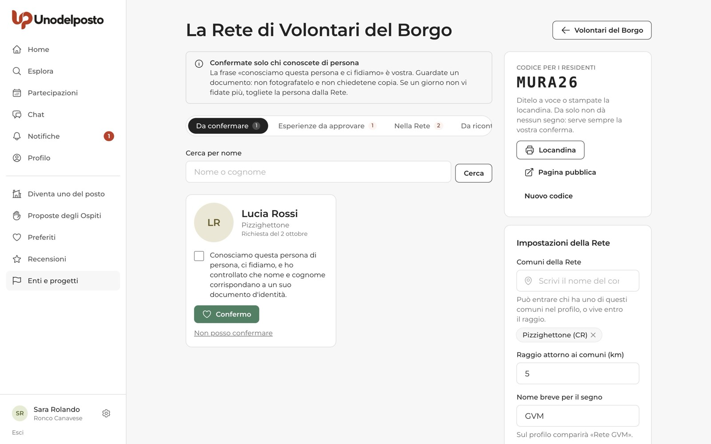
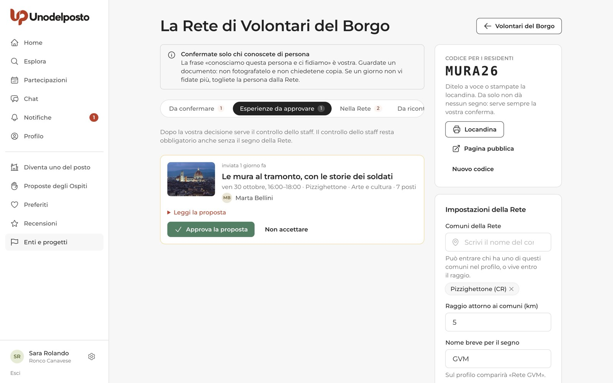
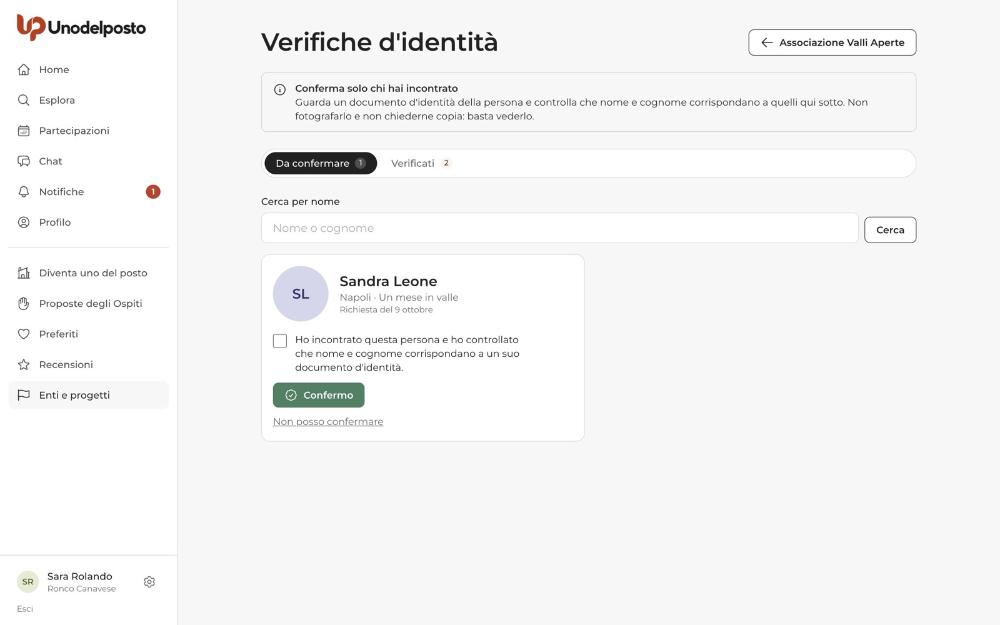
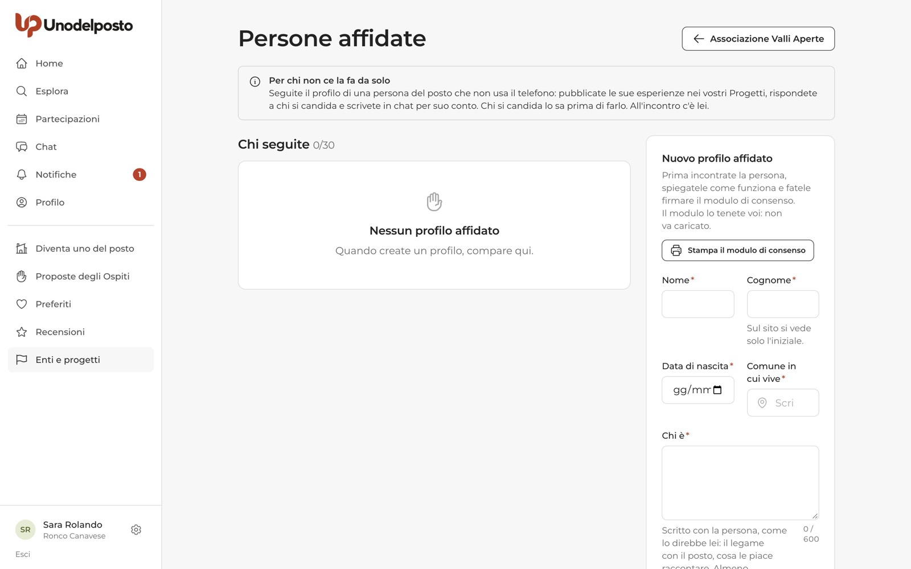
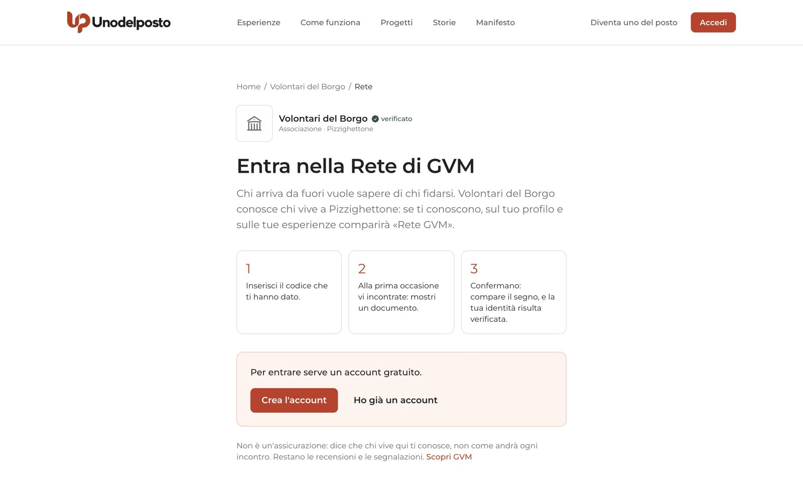
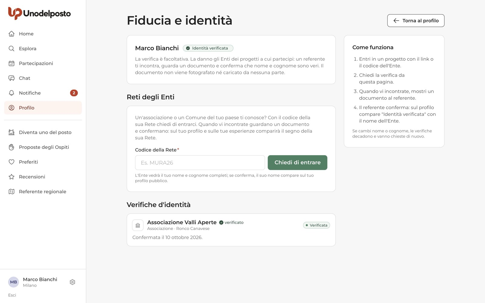

Un'associazione, un Comune o una Pro Loco conoscono le persone del loro territorio. Unodelposto permette a un Ente verificato di dirlo ad alta voce, in tre modi: con la Rete dichiara «conosciamo questa persona e ci fidiamo»; con la verifica d'identità conferma che nome e cognome sono veri; con le persone affidate segue il profilo di chi non usa il telefono.
In tutti e tre i casi il documento si guarda di persona e non si fotografa né si carica: nessun documento passa dalla piattaforma. E nessuno di questi segni è un'assicurazione: le recensioni restano sempre da leggere.
Rete
«Rete GVM» sul profilo e sulle esperienze: l'Ente conosce la persona di persona.
Identità verificata
L'Ente ha visto un documento: nome e cognome corrispondono.
Persone affidate
L'Ente pubblica e risponde per conto di chi non ce la fa da solo.
Facoltativo
Nessuno è obbligato: si usa tutto il resto anche senza segni.
Se gestisci un Ente
Rete, verifiche e persone affidate si aprono dalla scheda del tuo Ente, una volta che lo staff lo ha verificato.
La Rete dell'Ente
La Rete è l'insieme dei residenti che il vostro Ente conosce di persona e di cui si fida. Chi ne fa parte porta il segno Rete … sul profilo e sulle esperienze, con la frase «Conosciamo … e ci fidiamo.» firmata dall'Ente. Non serve organizzare eventi: si aggiunge una persona alla volta, e la Rete non scade.
- Apri la Rete. Nella scheda dell'Ente, nel riquadro «La vostra Rete», premi Scopri la Rete (la prima volta) o Apri la Rete.
- Compila le impostazioni. Scegli i Comuni della Rete, il Raggio attorno ai comuni (km) e il Nome breve per il segno (per esempio «GVM»: sul profilo comparirà «Rete GVM»). Puoi scegliere un Codice di 6–10 lettere o numeri, oppure lasciarlo vuoto e lo sceglie la piattaforma. Aggiungi Due righe per la pagina pubblica.
- Premi Accendi la Rete. Nel riquadro a destra compare il Codice per i residenti.
- Fate girare il codice. Ditelo a voce, premete Locandina per stamparne una da appendere in bacheca, o mandate le persone alla Pagina pubblica. Da solo il codice non dà nessun segno: serve sempre la vostra conferma.

Può chiedere di entrare solo chi ha nel profilo uno dei comuni della Rete, o vive entro il raggio scelto. Con Nuovo codice il codice attuale smette di funzionare; chi è già nella Rete resta.
Le schede della Rete
| Scheda | Cosa trovi |
|---|---|
| Da confermare | Chi ha inserito il codice: foto, nome e cognome completi, comune, data della richiesta. |
| Esperienze da approvare | Compare solo se avete scelto di approvare le esperienze dei membri (vedi sotto). |
| Nella Rete | Le persone confermate, con data e nome di chi ha confermato. |
| Da ricontrollare | Chi è stato confermato un anno fa: vi chiediamo se vi fidate ancora. |
Confermare, togliere, rinnovare
- Incontrate la persona. Guardate un suo documento d'identità e controllate che nome e cognome corrispondano a quelli sulla scheda. Non fotografatelo e non chiedetene copia.
- Spuntate la dichiarazione. «Conosciamo questa persona di persona, ci fidiamo, e ho controllato che nome e cognome corrispondano a un suo documento d'identità.»
- Premete Confermo. Il segno compare subito. La conferma vale anche come verifica d'identità: la persona ottiene insieme «Identità verificata».
- Se non potete confermare (la persona non si è presentata, il nome non corrisponde), premete Non posso confermare. Alla persona arriva solo che l'Ente non ha potuto confermare.
- Nella scheda Nella Rete, Togli dalla Rete fa sparire il segno. Il motivo è obbligatorio e lo vede solo lo staff di Unodelposto. La persona non potrà chiedervi di rientrare. La verifica d'identità invece resta: si toglie a parte, dalla scheda Verifiche.
- Ci fidiamo ancora rinnova la conferma. Un anno dopo la conferma la persona compare in Da ricontrollare; se non fate nulla, il segno resta.
- Nessuno conferma sé stesso: se un gestore vuole entrare nella Rete, lo conferma un altro gestore.
- Spegni la Rete, in fondo alle impostazioni, nasconde tutti i segni finché non la riaccendete.
Approvare le esperienze dei membri
Nelle impostazioni potete spuntare Approviamo noi le loro esperienze prima che escano. Da quel momento, quando una persona della Rete invia un'esperienza, la trovate nella scheda Esperienze da approvare.
- Leggete. Aprite Leggi la proposta per vedere descrizione, zona d'incontro e cosa portare.
- Decidete. Approva la proposta, oppure Non accettare scrivendo un motivo per la persona del posto: l'esperienza le torna in bozza.
- Poi tocca allo staff. In questa fase pilota, dopo la vostra decisione serve comunque il controllo dello staff di Unodelposto.

Verifiche d'identità
Chi partecipa ai vostri Progetti può chiedervi di confermare nome e cognome. Le richieste di tutti i vostri Progetti arrivano in un unico posto: nella scheda dell'Ente, riquadro «Verifiche d'identità», premi Apri le verifiche. Vi arriva un avviso nelle notifiche a ogni nuova richiesta.
- Cercate la persona. Nella scheda Da confermare usate Cerca per nome. La scheda mostra nome e cognome completi, comune, Progetto e data della richiesta.
- Guardate il documento dal vivo. Basta vederlo: non fotografatelo e non chiedetene copia.
- Spuntate e confermate. «Ho incontrato questa persona e ho controllato che nome e cognome corrispondano a un suo documento d'identità.» Poi Confermo.
- Oppure rifiutate. Non posso confermare non chiede motivi. Dopo qualche giorno la persona potrà chiedere di nuovo.

Nella scheda Verificati trovate chi avete confermato. Con Revoca (motivo obbligatorio, visibile solo allo staff) la persona perde il segno e non potrà chiedervi di nuovo la verifica. Usatelo per un errore o per un problema successivo.
Persone affidate
Alcune persone del posto, spesso anziane, hanno tanto da raccontare ma non usano il telefono. Con un profilo affidato l'Ente crea il loro profilo e lo segue: pubblica le esperienze nei propri Progetti, risponde a chi si candida e scrive in chat per loro conto. All'incontro c'è la persona.
Servono un Ente verificato e almeno un Progetto approvato e non ancora concluso. C'è un numero massimo di profili per Ente, indicato accanto a «Chi seguite».
- Incontrate la persona. Spiegatele come funziona Unodelposto, il patto e le regole.
- Fate firmare il consenso. In Persone affidate premete Stampa il modulo di consenso. Il modulo firmato lo tenete voi: non va caricato.
- Compilate il profilo. Nome, Cognome (sul sito si vede solo l'iniziale), Data di nascita (solo maggiorenni), Comune in cui vive, Chi è (scritto con la persona, come lo direbbe lei), lingue, foto facoltativa. L'Email della persona è facoltativa: mettetela solo se ne ha una e vuole entrare anche lei.
- Spuntate la dichiarazione e premete Crea il profilo.

Agire per conto della persona. Premete Segui il profilo di …. In alto compare una fascia «Stai seguendo il profilo di … per …» con il pulsante Torna al tuo profilo. Mentre seguite il profilo potete gestire le sue esperienze, le candidature, la conferma dell'incontro, la chat, le recensioni, le notifiche, le segnalazioni e i blocchi. Profilo, impostazioni e identità restano fuori.
- Ogni nuova esperienza sta sempre in un vostro Progetto e passa dal controllo dello staff, come tutte.
- In chat i vostri messaggi portano la scritta «scrive …» con il nome dell'Ente. Le recensioni che scrivete mostrano «Scritta da … per conto di …».
- Le email del profilo arrivano a voi gestori e, se la persona ha un'email sua, anche a lei.
- Tutti i gestori possono seguire il profilo; il registro conserva chi ha fatto cosa.
Lasciare il profilo. Se la persona ha un accesso suo, Lascia il profilo a … le restituisce il profilo e voi non potrete più entrarci. Se non ha un'email, aggiungetela prima da Modifica. In alternativa Chiudi il profilo cancella nome, foto e presentazione, senza ritorno; si può fare solo se non ci sono esperienze in programma.
Se vuoi entrare in una Rete
Un'associazione o un Comune del tuo paese ti conosce? Chiedi di entrare nella sua Rete.
Chiedere di entrare con il codice
Il codice te lo dà l'Ente: a voce, in bacheca o sulla locandina. Puoi usarlo in due punti:
- sulla pagina pubblica Entra nella Rete di … (ci arrivi anche dal QR della locandina): inserisci il codice e premi Chiedi di entrare. Se non hai ancora un account, prima premi Crea l'account;
- in Profilo, riquadro «Fiducia e identità», premi Gestisci verifiche e Reti. Nella sezione Reti degli Enti scrivi il Codice della Rete e premi Chiedi di entrare.


La Rete è per chi vive nei suoi comuni: se il comune del tuo profilo è fuori, ricevi un messaggio con i comuni ammessi. Inviando la richiesta, l'Ente vede il tuo nome e cognome completi. Alla prima occasione in cui vi incontrate, mostra un documento: se ti confermano, compare il segno della Rete e la tua identità risulta verificata.
| Stato | Cosa significa |
|---|---|
| Richiesta inviata | Aspetti di incontrare l'Ente. Puoi premere Ritira la richiesta. |
| Nella Rete | Il segno è sul tuo profilo e sulle tue esperienze. Puoi premere Esci dalla Rete quando vuoi. |
| Non confermata | L'Ente non ha potuto confermare. Dopo qualche giorno puoi riprovare. |
| Tolta dalla Rete | Il segno non c'è più; accanto trovi il motivo generale. |
Pubblicare con o senza il segno
Se l'Ente della tua Rete approva le esperienze dei membri, quando la bozza è pronta vedi due pulsanti: Invia a … (con il nome breve dell'Ente) e Invia senza il segno della Rete. Mentre aspetti la decisione dell'Ente puoi sempre scegliere di inviarla senza segno. In entrambi i casi serve il controllo dello staff di Unodelposto.
Se il tuo profilo lo segue un Ente
Se un Ente segue il tuo profilo e hai un'email tua, quando entri vedi in Home «Il tuo profilo lo segue …». Quando vuoi fare da te, premi Da ora lo gestisco io: l'Ente non potrà più entrarci.
Se partecipi
Puoi farti verificare dall'Ente di un Progetto, e leggere meglio i segni degli altri.
Chiedere una verifica d'identità
La verifica è facoltativa e la danno gli Enti dei Progetti a cui partecipi. Se sei entrato in un Progetto con il link o il codice dell'Ente:
- Apri Fiducia e identità. Da Profilo, premi Gestisci verifiche e Reti.
- Chiedi la verifica. Nella sezione «Puoi chiederla a» premi Chiedi la verifica accanto all'Ente. Da quel momento l'Ente vede il tuo cognome completo.
- Mostra un documento. La prima volta che incontri un referente dell'Ente, mostragli un documento. Nessuno lo fotografa.
- Ricevi la conferma. Sul profilo compare «Identità verificata» con il nome dell'Ente, che diventa visibile sul tuo profilo pubblico.
Nella sezione Verifiche d'identità vedi lo stato: Richiesta inviata, Verificata, Non confermata o Revocata. Quando è possibile riprovare compare Chiedi di nuovo.
Leggere i segni degli altri
- «Rete …»: un Ente del posto conosce questa persona e si fida. Sulla scheda dell'esperienza e sul profilo trovi la frase firmata dall'Ente.
- «Identità verificata»: nome e cognome sono veri. Non dice come si comporta la persona.
- Profilo seguito da un Ente: prima di candidarti leggi «Le candidature e la chat le segue … per conto di …». In chat i messaggi dell'Ente portano la scritta «scrive …». All'incontro ti accoglie la persona.
Domande frequenti
Il codice della Rete basta per avere il segno?
No. Il codice apre solo la richiesta. Il segno arriva quando un gestore dell'Ente ti incontra e conferma.
L'Ente conserva una copia del mio documento?
No. Il documento si guarda dal vivo e non si fotografa né si carica da nessuna parte.
La conferma nella Rete scade?
No. Una volta all'anno l'Ente riceve un promemoria per ricontrollare; se non fa nulla, il segno resta.
Che differenza c'è tra Rete e verifica d'identità?
La verifica dice che nome e cognome sono veri. La Rete dice di più: l'Ente conosce la persona e si fida. Entrare nella Rete vale anche come verifica.
Un Ente può pubblicare esperienze a nome proprio con le persone affidate?
No. Pubblica sempre a nome di una persona vera, che è presente all'incontro, e solo nei propri Progetti.
Ti serve su carta?
La stessa guida in PDF, da stampare o inviare.